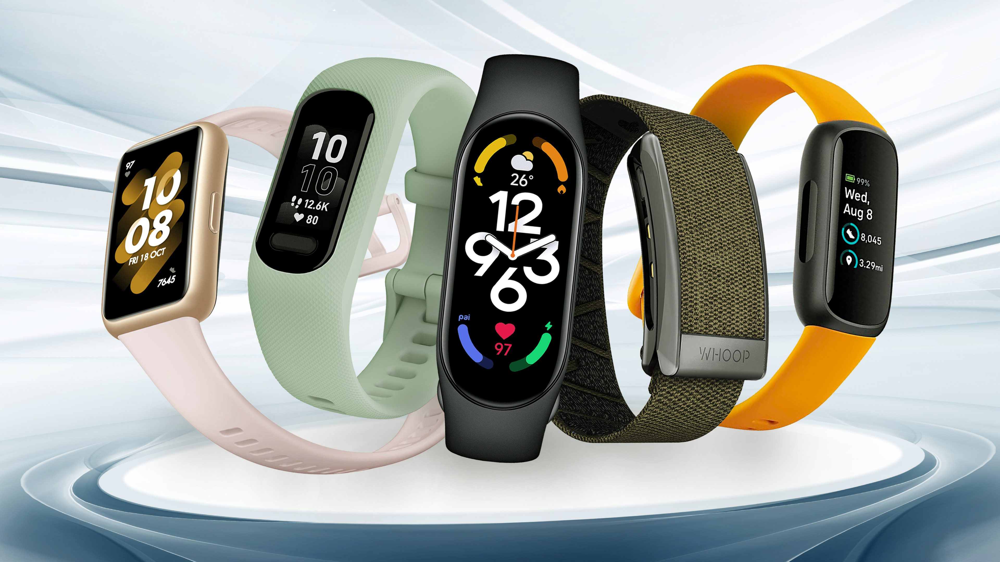

 <!DOCTYPE html>
 <html lang="en">
 <head>
    <meta charset="UTF-8">
    <meta name="viewport" content="width=device-width, initial-scale=1.0">
    <title>Document</title>
     <link rel="stylesheet" href="home.css">
      <link href="https://cdn.jsdelivr.net/npm/bootstrap@5.0.2/dist/css/bootstrap.min.css" rel="stylesheet" integrity="sha384-EVSTQN3/azprG1Anm3QDgpJLIm9Nao0Yz1ztcQTwFspd3yD65VohhpuuCOmLASjC" crossorigin="anonymous">
        <link href="https://cdn.jsdelivr.net/npm/bootstrap-icons@1.10.5/font/bootstrap-icons.css" rel="stylesheet" />
    <link href="https://cdn.jsdelivr.net/npm/bootstrap@5.3.3/dist/css/bootstrap.min.css" rel="stylesheet">
      <link rel="stylesheet" href="https://cdnjs.cloudflare.com/ajax/libs/font-awesome/6.7.2/css/all.min.css" integrity="sha512-Evv84Mr4kqVGRNSgIGL/F/aIDqQb7xQ2vcrdIwxfjThSH8CSR7PBEakCr51Ck+w+/U6swU2Im1vVX0SVk9ABhg==" crossorigin="anonymous" referrerpolicy="no-referrer" />
     <style>
  body {
    padding-top: 80px; /* Sesuaikan dengan tinggi navbar kamu */
  }
</style>
    </head>

   


 </body>
 </html>
 <nav class="navbar navbar-expand-lg bg-white shadow p-3 fixed-top">
  <div class="container-fluid">
    <a class="navbar-brand fw-bold" href="#">TechnoWatch</a>
    <button class="navbar-toggler" type="button" data-bs-toggle="collapse" data-bs-target="#navbarNav">
      <span class="navbar-toggler-icon"></span>
    </button>
    <div class="collapse navbar-collapse justify-content-between" id="navbarNav">
      <ul class="navbar-nav mx-auto mb-2 mb-lg-0">
        <li class="nav-item">
          <a class="nav-link active" href="index.html">Home</a>
        </li>
        <li class="nav-item">
          <a class="nav-link" href="about.html">About Us</a>
        </li>

        <!-- Dropdown with icon -->
        <li class="nav-item dropdown">
          <a class="nav-link dropdown-toggle" href="layanan.html" role="button" data-bs-toggle="dropdown" aria-expanded="false">
            Services <i class="bi bi-chevron-down ms-1"></i>
          </a>
          <ul class="dropdown-menu">
            <li><a class="dropdown-item" href="layanan1.html">Pemantauan Kesehatan</a></li>
            <li><a class="dropdown-item" href="layanan2.html">Pelacak Akivitas</a></li>
            <li><a class="dropdown-item" href="layanan3.html">Fitur Pintar</a></li>
          </ul>
        </li>

        <li class="nav-item">
          <a class="nav-link" href="team.html">Team</a>
        </li>
        <li class="nav-item">
          <a class="nav-link" href="contact.html">Contact Us</a>
        </li>
      </ul>

      <!-- Search + Icon Buttons -->
      <div class="d-flex align-items-center gap-3">
        <form class="d-flex" role="search">
          <input class="form-control" type="search" placeholder="Search" aria-label="Search" />
        </form>

        <!-- Icon Buttons -->
       
        <a href="register.html" class="text-primary fs-4" title="Register">
          <i class="bi bi-person-plus"></i>
           <a href="login.html" class="text-primary fs-4" title="Login">
       <i class="bi bi-person-fill-lock"></i>
        </a>
        </a>
      </div>
    </div>
  </div>
</nav>
 <!-- About Section -->
    <section id="about" class="section">
        <div class="container">
            <div class="section-title">
                <h2>About Us</h2>
            </div>
            <div class="row align-items-center">
                <div class="col-lg-6">
                    <div class="about-image">
                        
                    </div>
                </div>
                <div class="col-lg-6">
                    <div class="about-content">
                       <p><strong>PT Tata Layak Prawira (Xprins TLP)</strong> didirikan pada tahun 1997 di Kemayoran, Jakarta Pusat. <strong>Xprins TLP</strong> adalah perusahaan yang bergerak di bidang teknologi informasi dan layanan wearble, khususnya untuk Digital Variable Data Printing.</p>
                        <p>Saat ini kami telah menjadi <strong>PT Galva Technovision (GTV)</strong>, salah satu anak perusahaan dari <strong>Galva Group</strong>. Sejak bergabung pada awal tahun 2021, <strong>GTV</strong> dapat melayani berbagai kebutuhanlayanan wearble sesuai dengan standar tingkat layanan yang diinginkan pelanggan. <strong>GTV</strong> akan memberikan solusi untuk mengoptimalkan clayanan wearble di perusahaan Anda (instansi pemerintah/swasta, yayasan, kampus/sekolah, dan lainnya).</p>

                    </div>
                </div>
            </div>
            
            <div class="row mt-5">
                <div class="col-md-6">
                    <div class="about-card">
                        <div class="about-card-icon">
                            <i class="fas fa-eye"></i>
                        </div>
                        <h3>Visi</h3>
                        <p>Menjadi perusahaan teknologi informasi terdepan yang menghadirkan solusi wearable inovatif untuk mendukung kesehatan dan gaya hidup cerdas masyarakat.</p>
                    </div>
                </div>
                <div class="col-md-6">
                    <div class="about-card">
                        <div class="about-card-icon">
                            <i class="fas fa-bullseye"></i>
                        </div>
                        <h3>Misi</h3>
                        <p>1. Mengembangkan produk wearable seperti smartwatch dengan teknologi akurat dan mudah digunakan.</p>
                        <p>2. Menyediakan layanan teknologi yang responsif, modern, dan dapat meningkatkan kualitas hidup pengguna.</p>
                        <p>3. Mengoptimalkan pengalaman pengguna melalui desain yang stylish dan fitur lengkap.</p>
                        <p>4. Membangun hubungan yang kuat dengan pelanggan melalui inovasi dan pelayanan terbaik dari website kami.</p>
                    </div>
                </div>
            </div>
        </div>
    </section>
     </body>